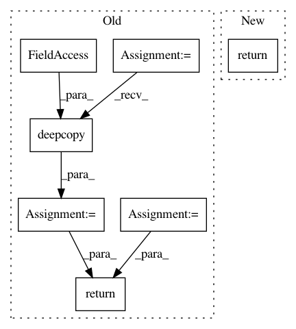

adc869e88b109af683ac94251165f96f7a406bba,onnx_tf/handlers/backend/onehot.py,OneHot,version_9,#Any#Any#,38
Before Change
@classmethod
def version_9(cls, node, **kwargs):
attrs = copy.deepcopy(node.attrs)
tensor_dict = kwargs["tensor_dict"]
indices = tensor_dict[node.inputs[0]]
depth = tensor_dict[node.inputs[1]]
off_value = tensor_dict[node.inputs[2]][0]
on_value = tensor_dict[node.inputs[2]][1]
attrs["dtype"] = on_value.dtype
return [
cls.make_tensor_from_onnx_node(
node,
inputs=[indices, depth, on_value, off_value],
attrs=attrs,
**kwargs)
]
After Change
@classmethod
def version_9(cls, node, **kwargs):
return cls._common(node, **kwargs)
@classmethod
def version_11(cls, node, **kwargs):
return cls._common(node, **kwargs)
In pattern: SUPERPATTERN
Frequency: 4
Non-data size: 7
Instances
Project Name: onnx/onnx-tensorflow
Commit Name: adc869e88b109af683ac94251165f96f7a406bba
Time: 2019-10-04
Author: wtsang@us.ibm.com
File Name: onnx_tf/handlers/backend/onehot.py
Class Name: OneHot
Method Name: version_9
Project Name: OpenNMT/OpenNMT-tf
Commit Name: 710310c925e848ad2424531cc8dc3cf6f3d50f56
Time: 2019-07-04
Author: guillaume.klein@systrangroup.com
File Name: opennmt/runner.py
Class Name: Runner
Method Name: _init_run
Project Name: onnx/onnx-tensorflow
Commit Name: 1a433b9140cc4824ec50f13e3295a5cfcf046c27
Time: 2021-01-13
Author: chhuang@us.ibm.com
File Name: onnx_tf/handlers/backend/gather.py
Class Name: Gather
Method Name: version_11
Project Name: freelunchtheorem/Conditional_Density_Estimation
Commit Name: 99c266da204242a0bceec83c5a3ef35928f5d02b
Time: 2018-03-26
Author: f4bio.ferreira@gmail.com
File Name: cde/tests/issue1_noise_regularization.py
Class Name:
Method Name: issue1